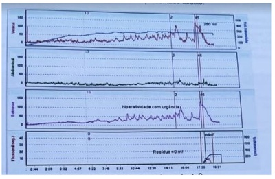
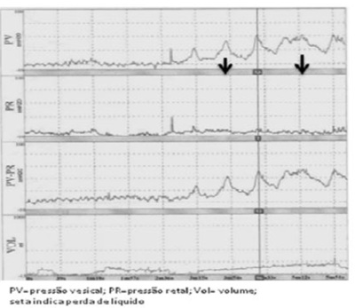
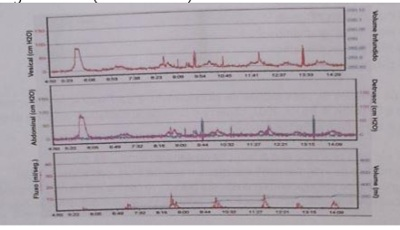
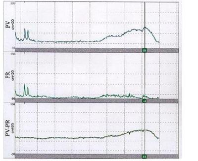

Questão 1 · Slings · 4000125779Paciente do sexo feminino, 60 anos, com perda urinária aos esforços, obesa, apresenta estudo urodinâmico mostrando incontinência urinária aos esforços com menor pressão de perda de 30 cm de H₂O. Sendo optado por terapêutica cirúrgica, qual seria a melhor opção?
A Cirurgia de de sling de uretra média.
B Cirurgia de Burch.
C Cirurgia de Marshal-Marketti-Kants.
D Cirurgia de Kelly-Kennedy.
E Histerectomia vaginal total.
Questão 2 · Tratamento · 4000119197Uma mulher de 32 anos de idade refere perda de urina aos grandes esforços, quando a bexiga está muito cheia ao pular corda ou tossir muito forte. É nuligesta e não apresenta nenhuma comorbidade. Segundo as recomendações atuais, o tratamento dessa afecção deve ser?
A Cirurgia de Burch.
B Fisioterapia pélvica.
C Sling de aponeurose.
D Sling sintético.
Questão 3 · Tratamento · 4000114162Paciente encaminhada a hospital terciário para avaliação e conduta. No encaminhamento está descrito que a paciente tem perda urinaria involuntária e exames de urina tipo I normal e urocultura negativa. Solicitado estudo urodinâmico apresentado abaixo. Qual a conduta terapêutica mais adequada para esta paciente?

A Solifenacina.
B Imipramina.
C Cirurgia com sling.
D Cirurgia de Burch.
Questão 4 · Diagnóstico · 4000108910Durante estudo urodinâmico em mulher de 60 anos de idade, o médico observa aumento da pressão vesical que atinge 45cmH₂O após 200ml de soro infundidos. Ao observar a linha da pressão abdominal nota-se que também atinge 45cmH2O. Há perda de líquido pela uretra. O diagnóstico urodinâmico é de?
A Bexiga hiperativa
B Incontinência urinária de esforço sem defeito esfincteriano
C Incontinência urinária de esforço por defeito esfincteriano
D Incontinência urinária mista.
Questão 5 · Slings · 4000108881Paciente de 45 anos refere perda de urina aos esforços. Apresenta ciclos menstruais regulares e antecedente de 2 partos vaginais assistidos e sem complicações, sendo o último há 9 anos. Ao exame ginecológico observa-se cistocele e retocele moderadas e perda objetiva de urina em manobra de esforço. A cirurgia indicada é correção da incontinência urinária através de faixa/tela tipo "sling" transobturatório. Qual é o princípio de correção da incontinência urinária do procedimento cirúrgico citado?
A Correção da cistocele
B Reforço do esfíncter uretral
C Apoio suburetral
D Reconstrução da fáscia endopélvica
Questão 6 · Incontinência urinária · 4000099573Mulher, 40a, G2P2C0A0, vem encaminhada da Unidade Básica de Saúde com queixa de perda urinária precedida de urgência há 3 anos. Refere frequência urinária de 9 vezes durante o dia e 1 vez à noite. Nega enurese noturna. Realizou sioterapia perineal e mudanças comportamentais sem melhora significativa do quadro. Antecedentes pessoais: glaucoma e diabetes mellitus há 3 anos. Medicamentos em uso: Metformina e colírio de pilocarpina. Exame ginecológico: não apresenta prolapsos genitais ou perdas urinárias durante a manobra de valsava. A CONDUTA É:
A Beta 3 adrenérgico oral.
B Anticolinérgico oral.
C Cirurgia de Sling.
D Cirurgia de Burch.
Questão 7 · Incontinência urinária mista · 4000076509MDC, 52 anos, com estória de incontinência urinária aos esforços, frequência e urgência miccionais, com piora recente associada a muitos fogachos. Antecedentes de três partos cesáreos. Ao exame físico, presença de distopia estádio I de POP-Q. Ao exame urodinâmico: pressão de perda de 50cm/h2o e presença de contrações involuntárias do detrusor. Diagnóstico e conduta inicial:
A Fístula vesico-vaginal com baixo débito. Tratamento cirúrgico.
B Bexiga hiperativa. Iniciar tratamento clínico.
C Lesão esfincteriana. Tratamento cirúrgico.
D Incontinência urinária. Tratamento cirúrgico.
E Incontinência urinária mista. Iniciar com tratamento clínico.
Questão 8 · Diagnóstico · 4000076460O diagnóstico de hiperatividade do detrusor é estabelecido por:
A Cistoscopia.
B Eletromiografia
C urodinâmico
D Anamnese.
E US de vias urinárias.
Questão 9 · Fisiologia da micção · 4000075322Na farmacologia do trato urinário é CORRETO afirmar:
A Os agentes colinérgicos promovem relaxamento do detrussor sem ação uretral.
B Os agentes colinérgicos promovem relaxamento do detrussor e contração uretral.
C Os agentes anticolinérgicos diminuem a atividade do detrussor e não possuem ação uretral.
D Os agentes anticolinérgicos promovem eficaz contração do detrussor e relaxamento uretral.
E Os agentes anticolinérgicos aumentam a atividade do detrussor e a contração uretral.
Questão 10 · Diagnóstico · Exames complementares · 4000075309Na incontinência urinária de esforço, é CORRETO afirmar:
A A JUV encontra-se abaixo da borda inferior da sínfise púbica
B A JUV encontra-se acima da borda inferior da sínfise púbica
C A JUV encontra-se ao nível da sínfise púbica
D A JUV encontra-se abaixo da borda superior da sínfise púbica
E A JUV encontra-se acima da borda superior da sínfise púbica
Questão 11 · Anatomia do trato urinário · Fisiologia da micção · 4000069084O fechamento uretral é mantido por uma combinação de fatores extrínsecos e intrínsecos. Assinale a alternativa com fatores extrínsecos:
A Músculos elevadores do ânus, fáscia endopélvica e fixações às paredes laterais da pelve e à uretra, músculo estriado da parede uretral
B Músculos elevadores do ânus, fáscia endopélvica e fixações às paredes laterais da pelve e à uretra, músculo liso da parede uretral
C Fáscia endopélvica e fixações às paredes laterais da pelve e à uretra, músculo liso da parede uretral, elasticidade uretral
D Músculos elevadores do ânus, fáscia endopélvica e fixações às paredes laterais da pelve e à uretra
E Músculo estriado da uretra, músculo liso da uretra, elasticidade uretral
Questão 12 · Tratamento · 4000059148Uma mulher de 37 anos, com 2 partos vaginais, queixa-se de perda de urina aos grandes esforços quando com bexiga cheia. Nega outros sintomas, mas apresenta prolapso de parede vaginal anterior de pequena monta, com boa função neuromuscular do assoalho pélvico. Além disso, apresenta urina residual desprezível. A conduta mais adequada é:
A Administração de medicação anticolinérgica
B Fisioterapia do assoalho pélvico
C Cirurgia de Burch
D Cirurgia de sling
E Colpossuspensão retropúbica
Questão 13 · Fisiopatologia · 4000050636A bexiga hiperativa é uma síndrome que se caracteriza pela urgência miccional usualmente acompanhada de aumento da frequência urinária e de noctúria na ausência de fatores infecciosos, metabólicos ou locais. Em relação à siopatologia da bexiga hiperativa, é correto afirmar:
A O modelo neurogênico (teoria neurogênica) determina que os sintomas de urgência e o aumento da frequência miccional estão associados com denervação e ligações intercelulares anormais.
B Na teoria miogênica, a hipoatividade vesical associada à hipertrofia das células musculares do detrussor explicariam o quadro clínico.
C As alterações do microbioma vesical e a severidade dos sintomas se associam com a fisiopatologia da bexiga hiperativa.
D A cura da urgeincontinência e da incontinência urinária de esforço podem ser realizadas por cirurgia.
E O óxido nítrico, liberado por nervos eferentes do colo vesical e da uretra, está envolvido no mecanismo de contração vesical e uretral e influencia a síndrome.
Questão 14 · Incontinência urinária · 4000047453Paciente de 45 anos, nuligesta, IMC= 22 kg/m² ciclos menstruais regulares, queixa-se que levanta cerca de 8 vezes a noite para urinar e que na maioria das vezes precisa ir às pressas ao banheiro, com medo de se urinar. Nega diabetes, hipertensão e infecção do trato urinário. Ao exame físico: ausência de perdas urinárias na manobra de Valsalva e ausência de distopias genitais. Dentre as opções abaixo, a principal hipótese diagnóstica e seu respectivo tratamento é:
A incontinência urinária de esforço, tratar com cirurgia de sling.
B bexiga hiperativa, tratar com anticolinérgicos.
C bexiga hiperativa, tratar com cirurgia de Kelly Kennedy.
D incontinência urinária de esforço, tratar com tolterodina.
E bexiga hiperativa, tratar com cirurgia de sacrocolpopexia.
Questão 15 · Fisiopatologia · 4000039555Paciente 54 anos, G3P2A1C1, com queixa de perda urinária aos esforços, urgência miccional, nictúria e urge-incontinência, sem distopia genital ao exame físico. O estudo urodinâmico evidenciou fase de esvaziamento normal e fase de enchimento apenas com algumas contrações involuntárias do detrusor, associadas com perdas urinárias. Com base nestas evidências, o diagnóstico é de
A incontinência urinária de esforço.
B bexiga hiperativa.
C incontinência urinária mista.
D bexiga neurogênica hipotônica.
Questão 16 · Diagnóstico · Exame f ísico · 4000039291Lídia, 42 anos, secretária, vem à consulta na Unidade Básica de Saúde com queixa de perda de urina quando espirra ou quando agacha no trabalho há 2 anos. Nega disúria, polaciúria ou urgência urinária. Conta que a situação está piorando e está tendo prejuízo no seu desempenho do trabalho. Tem medo de fazer cirurgia. Já passou por 3 cesáreas e sofreu muito no pós-operatório. Considerando o caso de Lídia e seus conhecimentos sobre incontinência urinária, a melhor alternativa é
A o tratamento cirúrgico é necessário no caso de Lídia, pois trata-se de um caso de incontinência de esforço;
B o treinamento dos músculos do assoalho pélvico tem como objetivo o relaxamento da musculatura do períneo;
C nesse caso, é necessário solicitar um estudo urodinâmico para definir o tipo de incontinência;
D a avaliação digital durante o toque vaginal ou retal é adequada para medir força e capacidade da musculatura do assoalho pélvico.
Questão 17 · Fisiologia da micção · Fatores de risco · 4000036163A incontinência urinária é muito prevalente em idosos e está associada à estigmatização e isolamento social, além de predispor a infecções. A respeito da incontinência urinária, é correto afirmar:
A a incontinência urinária por estresse é a causa mais comum de incontinência em pacientes idosos
B terapias comportamentais não são efetivas no manejo específico da incontinência urinária de urgência
C o estudo urodinâmico completo deve ser realizado em todo paciente com queixa de incontinência urinária
D a deficiência de estrogênio causa atrofia da mucosa vaginal, à qual se associa a incontinência urinária na mulher após a menopausa
Questão 18 · Def iciência esf incteriana intrínseca · Slings · 4000034923Paciente de 65 anos, comparece ao consultório ginecológico queixando de perda urinária aos esforços com piora progressiva nos últimos 05 anos. Foi solicitado teste urodinâmico que evidenciou perda uretral com 55 cm H2O. O diagnóstico e conduta são:
A A paciente tem o diagnóstico de hipermobilidade do colo vesical com necessidade de tratamento medicamentoso.
B Realizado o diagnóstico de defeito esfincteriano, indica-se a correção cirúrgica de sling.
C Podemos pensar em bexiga hiperativa com necessidade de realização de autocateterismo.
D A causa da incontinência urinária é mista e pode ser tratada com amitriptilina.
E O diagnóstico seria de incontinência urinária de urgência, sendo o ideal iniciarmos com medicações anticolinérgicas.
Questão 19 · Anamnese · Fatores de risco · 4000027788Maria, 62 anos, hipertensa e diabética, vai à Unidade Básica de Saúde (UBS) para sua coleta trianual do exame citopatológico do colo do útero. A enfermeira questiona sobre perda urinária e ela responde positivamente, especialmente a noite. Para discutir o caso com o médico, revisa o prontuário e observa que houve a prescrição de um novo anti- hipertensivo. Marque o medicamento que pode estar relacionado ao aparecimento de sintomas de vias urinárias:
A Losartan.
B Anlodipina.
C Carvedilol.
D Metildopa.
Questão 20 · Incontinência urinária · 4000011698Mulher, 69 anos de idade, refere urgência em urinar no retorno ao seu domicílio e, às vezes, tem perda urinária concomitante, há 6 meses. Qual é o diagnóstico clínico e a conduta?
A Incontinência Urinária de Esforço, indicar cirurgia de Burch
B Infecçcão Urinária de repetição, prescrição de antibioticoprofilaxia por 6 meses
C Incontinência Urinária de Esforço, indicar fisioterapia do assoalho pélvico
D Síndrome da Bexiga Hiperativa, prescrição de antagonista de receptor B3 adrenérgico
E Síndrome da Bexiga Hiperativa, prescrição de anticolinérgico ou B3 adrenérgico
Questão 21 · Diagnóstico · Tratamento · 4000006891Senhora Maria Clara com 70 anos de idade, casada, dona de casa. Veio ao ambulatório de ginecologia encaminhada pelo médico de família e comunidade por apresentar perda de urina há cinco anos ao tossir ou espirrar, porém há um ano refere urgência e urgeincontinência, sem nocturia. 5G4P1A com três partos normais e uma cesárea, sendo o último há 35 anos, com o maior RN pesando 4 kg. Menopausa aos 45 anos, não realizou terapia hormonal. Relata ser hipertensa fazendo tratamento há 15 anos. Ao exame físico e ginecológico foi observado obesidade grau II, IMC: 36 kg/m² e perda de urina sincrônica à manobra de valsalva pelo meato uretral em posição ginecológica. Atro a genital. Ao toque útero e ovários involuidos. Trouxe exames solicitados pelo médico de família com esses resultados: Urina I normal, Urocultura negativa e Estudo urodinâmico: ausência de contração involuntária do detrusor com pressão de perda (VLPP): 45 cmH2O, capacidade cistometrica = 300ml com resíduo pós-miccional de 30ml. Em relação ao caso qual a hipótese diagnóstica e conduta:
A Incontinência Urinária de Esforço (IUE por defeito esfincteriano e obesidade Grau II. O tratamento é cirúrgico - SLING com orientação para perda de peso.
B IUE por defeito esfincteriano e obesidade Grau II. O tratamento é fisioterapia do assoalho pélvico, se não houver melhora indicar cirurgia de SLING com orientação para a perda de peso.
C IUE por hipermobilidade do colo vesical e obesidade Grau III. O tratamento é cirúrgico – SLING e orientar perda de peso.
D IUE por hipermobilidade do colo vesical e obesidade Grau II. O tratamento é fisioterapia do assoalho pélvico e cirurgia de BURCH com orientação para a perda de peso.
Questão 22 · Fisiopatologia · 4000118460Considera-se causa de incontinência urinária aos esforços na mulher
A a posição infrapúbica do colo vesical durante o aumento da pressão abdominal.
B a lesão dos ligamentos uterossacros e redondos.
C o alargamento do hiato formado pelos músculos bulbocavernosos.
D a pressão vesical aumentada decorrente de menor elasticidade vesical.
E o déficit de inervação colinérgica pelo sistema nervoso autônomo.
Questão 23 · Estudo urodinâmico · 4000112965A avaliação urodinâmica está indicada:
A quando se deseja documentar e quantificar a perda urinária.
B para se avaliar a mobilidade uretral.
C em todas as mulheres com queixa de perda de urina, principalmente aos esforços.
D em pacientes com prolapso genital.
E antes de procedimentos cirúrgicos, para corrigir a incontinência urinária de esforço com sintomatologia mista.
Questão 24 · Propedêutica · 4000108046Qual a propedêutica inicial em mulheres com queixa de incontinência urinária de início recente?
A Uretrocistografia.
B Estudo Urodinâmico.
C Ultrassom endovaginal.
D Urina I e Urocultura.
Questão 25 · Farmacológicos · 4000101465A síndrome da bexiga hiperativa é uma doença que leva a imenso prejuízo na qualidade de vida das mulheres. Entre as possibilidades terapêuticas, muito se tem discutido sobre o uso do Mirabegron. A respeito dessa medicação, o efeito no músculo detrusor é o de:
A Inibição dos receptores M2 e M3 colinérgicos e, consequentemente, relaxamento da musculatura do detrusor.
B Ativação dos receptores beta 3 adrenérgicos e, consequentemente, relaxamento da musculatura do detrusor.
C Inibição dos receptores beta 3 adrenérgicos e, consequentemente, relaxamento da musculatura do detrusor.
D Ativação dos receptores M2 e M3 colinérgicos e, consequentemente, relaxamento da musculatura do detrusor.
Questão 26 · Propedêutica · Fisiologia da micção · 4000101431O resultado do estudo urodinâmico em mulheres com hipocontratilidade do detrusor é de:
A Resíduo pós-miccional elevado, fluxo máximo reduzido e pressão de abertura do detrusor diminuída.
B Resíduo pós-miccional elevado, fluxo máximo intermitente e ausência de contração do detrusor.
C Resíduo pós-miccional elevado, fluxo máximo reduzido e pressão de abertura do detrusor aumentada.
D Resíduo pós-miccional diminuído, fluxo máximo reduzido e pressão de abertura do detrusor diminuída.
Questão 27 · Incontinência urinária aos esf orços · 4000098197Mulher, 35a, G1P1A0C0, procura atendimento referindo perda urinária aos esforços após parto vaginal que ocorreu há 6 meses. Está em amamentação exclusiva desde o parto. Exame ginecológico: ausência de distopias. A CONDUTA É:
A Prescrever estrogênios vaginais.
B Treinamento dos músculos do assoalho pélvico.
C Indicar cirurgia de Sling.
D Nenhum tratamento até 12 meses após o parto.
Questão 28 · Cirúrgico · Cirurgia · 4000056198Com relação ao uso de telas sintéticas na correção cirúrgica de incontinência urinária, podemos afirmar que:
A O uso de telas sintéticas para correção cirúrgica de incontinência urinária de esforço, dispensam a preparação da mucosa vaginal, através do uso de terapia estrogênica tópica.
B O uso de telas sintéticas para correção cirúrgica de incontinência urinária de esforço, fez com que a cirurgia de Burch passasse a ser contra-indicada.
C Após a realização de correção cirúrica de incontinência urinária de esforço com uso de tela suburetral, as taxas de cura em 10 anos, são iguais às da cirurgia de Burch.
D A correção de incontinência urinária por hiperatividade detrussora com tela com fixação supra-púbica, tem taxas de cura melhores do que, quando se utiliza tela com fixação transobturatória.
Questão 29 · Fatores de risco · 4000053772Qual das condições abaixo não é considerada fator de risco para incontinência urinaria em mulheres?
A parto cesáreo
B diabetes melito
C obesidade
D menopausa
Questão 30 · Diagnóstico · 4000048963Paciente de 67 anos queixa-se de urgência miccional e urge-incontinência, além de noctúria (5 a 6 episódios), há cerca de 3 anos, com piora há 5 meses. A menopausa foi há 20 anos, nunca fez uso de terapia hormonal e atualmente faz uso de promestriene duas vezes por semana intra-vaginal. No momento, está em uso de fraldas geriátricas decorrente da perda urinária. Em relação ao diagnóstico provável e seu tratamento, assinale a opção CORRETA.
A O diagnóstico clínico é de bexiga hiperativa. Devemos solicitar urocultura com antibiograma para descartar infecção de trato urinário associada e podemos iniciar o tratamento clínico com terapia comportamental, mudança de hábitos de vida e fisioterapia urogenital como tratamentos de primeira linha.
B O diagnóstico clínico é de bexiga hiperativa. Devemos solicitar estudo urodinâmico para confirmar o diagnóstico, assim como devemos solicitar urocultura com antibiograma para descartar infecção de trato urinário associada e só devemos iniciar o tratamento após a confirmação do diagnóstico.
C O diagnóstico clínico é de bexiga hiperativa. Devemos solicitar estudo urodinâmico e urocultura para confirmar o diagnóstico e, confirmando, iniciamos o tratamento com anticolinérgico como a oxibutinina,solifenacina ou dariferacina.
D O diagnóstico clínico é de bexiga hiperativa, mas só devemos iniciar o tratamento clínico após o resultado do estudo urodinâmico mostrando contrações não inibidas do detrusor e, só após, iniciamos o tratamento com fisioterapia urogenital.
E O diagnóstico clínico é de bexiga hiperativa, que deve ser confirmado com estudo urodinâmico e, após confirmado, iniciamos como tratamento de primeira linha os anticolinérgicos e como opção para tratamentos de segunda linha, a fisioterapia urogenital.
Questão 31 · Farmacológico · 4000048238O tratamento farmacológico da incontinência urinária de esforço pode ser, inicialmente, realizado com diversos medicamentos. Dentre os relacionados a seguir, qual apresenta a melhor eficácia?
A efedrina
B propranolol
C clembuterol
D imipramimna
E duloxetina
Questão 32 · Farmacológicos · 4000047907Paciente de 50 anos de idade há 01 ano vem apresentando quadro progressivo de vontade imperiosa de urinar. Muitas vezes relata perda de urina antes de conseguir esvaziar a bexiga adequadamente. Refere nictúria. Tem que levantar-se pelo menos duas vezes após dormir. Esse problema teve início alguns meses após a data de sua menopausa. Percebeu também, vagina mais seca, o que torna a relação sexual desconfortável. De comorbidade tem hipotireidismo que é controlado com levotiroxina. Exame físico ginecológico sem distopias com importante hipotro a vaginal. Foi submetida a estudo urodinâmico que mostrou contrações involuntárias do detrusor, com e sem perda de urina. O tratamento mais adequado para essa paciente é:
A terapia hormonal tópica vaginal e cirurgia de “sling” retropúbico.
B cirurgia de “sling” transobturatório e fisioterapia pélvica vaginal e terapia hormonal tópica vaginal.
C cirurgia via vaginal de Kelly-Kennedy.
D terapia hormonal tópica vaginal e anticolinérgico via oral.
E cirurgia de “sling” transobturatório e anticolinérgico via oral.
Questão 33 · Fisiologia da micção · 4000042767O principal centro facilitador da micção (Núcleo Motor de Detrusor) localiza-se no(a):
A Cerebelo.
B Lobo frontal.
C Hipotálamo.
D Ponte.
Questão 34 · Fatores de risco · 4000039847A incontinência urinária é definida como perda involuntária de qualquer volume de urina. Sobre esta patologia, é CORRETO afirmar que:
A A prevalência de incontinência urinária varia entre 10 e 25% em estudos de países ocidentais.
B O Índice de Massa Corporal (IMC) é um fator de risco significativo e independente para incontinência urinária de todos os tipos.
C O estímulo simpático leva à eliminação da urina através de impulsos neurais transmitidos pelos nervos pélvicos.
D O tratamento farmacológico tem papel primário importante no tratamento das mulheres com incontinência urinária de esforço.
Questão 35 · Incontinência urinária mista · Farmacológicos · Farmacológico · 4000125974Paciente de 56 anos, busca atendimento médico queixando-se de perda urinária aos pequenos esforços tipo andar, correr, tossir, espirrar, além de urge-incontinência. Refere 6 partos normais, já tendo sido submetida a perineoplastia em 2 ocasiões. Ao exame físico, perda urinária visível à manobra de Valsalva, vagina atró ca e ausência de distopias. Urocultura negativa. Estudo Urodinâmico revela incontinência urinária mista com pressão de perda urinária de 45cm³ de H2O. Assinale a melhor alternativa terapêutica para esta paciente:
A Tratamento clínico com promestrieno tópico e anticolinérgicos.
B Tratamento clínico com anticolinérgicos e promestrieno tópico seguido de tratamento cirúrgico com perineoplastia (técnica de KellyKennedy).
C Tratamento clínico com promestrieno tópico e anticolinérgicos seguido de tratamento cirúrgico com faixa de SLING transobturatório (TVT-O).
D Tratamento cirúrgico isolado com cirurgia de Bursh.
E Tratamento clínico com promestrieno tópico e anticolinérgicos seguido de cirurgia de Bursh.
Revisar: possível letra faltando em enunciado
Questão 36 · Síndrome da bexiga dolorosa · 4000110748Sobre a cistite intersticial é correto afirmar que:
A É um distúrbio inflamatório crônico da bexiga caracterizado pela presença de aumento da frequência e urgência urinária e dor pélvica.
B À cistoscopia, as úlceras de Hunner são lesões de mucosa de cor vermelho- amarronzada com pequenos vasos irradiando na direção da cicatriz central, encontradas em aproximadamente 50% dos casos.
C À cistoscopia, são achados raros as glomerulações, que são petéquias pequenas ou hemorragias na submucosa vesical.
D A dor costuma ser amenizada por alimentos condimentados; bebidas alcoólicas, ácidas, gaseificadas e contendo cafeína.
E Durante a micção, a queixa se acentua devido ao esvaziamento vesical.
Questão 37 · Incontinência urinária de urgência · 4000109520Mulher de 39 anos com 3 partos normais e o último cesárea, há 2 anos, queixa-se de leucorreia e que tem tido necessidade de levantar várias vezes à noite para urinar e, mesmo durante o dia, tem muita necessidade de ir ao banheiro e, em algumas, não consegue segurar a urina até lá chegar. Já fez exames de urina que não revelaram nenhuma alteração. Frente a esse quadro apresentado, o diagnóstico é
A provavelmente diabetes mellitus.
B instabilidade do detrusor.
C fístula vesicovaginal.
D incontinência urinária de esforço.
E infecção urinária.
Questão 38 · Incontinência urinária mista · Estudo urodinâmico · 4000098647Mulher de 32 anos de idade refere perda de urina. Ao realizar o estudo urodinâmico, o médico observa, na cistometria, a presença de duas contrações não inibidas do detrusor, com perdas, e pressão de perda na manobra de Valsalva de 132 cmH2O. A fluxometria livre está normal. Pode-se afirmar que o diagnóstico urodinâmico é de incontinência urinária:
A De esforço por defeito esfincteriano.
B De esforço por hipermobilidade do colo vesical.
C Por hiperreflexia do detrusor.
D Mista.
Questão 39 · Cirúrgico · 4000096221Durante a cirurgia de colpo-uretropexia retropúbica de Burch, a estrutura que não apresenta risco de lesão é
A a uretra.
B a bexiga.
C a artéria clitoridiana.
D a artéria ovariana.
Questão 40 · Incontinência urinária mista · 4000083867ACL, 50 anos, história de incontinência urinária aos esforços, frequência e urgência. Piora recente associada a muitos fogachos. História de 3 partos cesáreos. Ao exame físico, presença de distopia estágio I de POP-Q. Ao exame urodinâmico, verificado uma pressão de perda de 50 cmh2o, e presença de contrações involuntárias do detrusor. Diagnóstico e conduta inicial:
A Incontinência urinária mista; iniciar com tratamento clínico.
B Bexiga hiperativa; iniciar com tratamento clínico.
C Lesão esfincteriana; tratamento cirúrgico.
D Incontinência urinária de esforço; tratamento cirúrgico.
E Fístula vésico-vaginal com baixo débito; tratamento cirúrgico.
Questão 41 · Cirúrgico · 4000072921Na Colposuspensão Retropúbica Extraperitoneal - Cirurgia de Burch convencional - a via de acesso é:
A Pelo Forame Obturador
B Pelo Espaço de Retzius
C Pela cicatriz umbilical
D Por via trans-vesical
Questão 42 · Anatomia do trato urinário · Fisiologia da micção · 4000067201Em relação às queixas de incontinência urinária de esforço, sabe-se que o suporte da uretra apresenta importância e ocorre através de estruturas anatômicas. São estruturas que fazem parte desse mecanismo de suporte, EXCETO:
A fáscia endopélvica.
B arco tendíneo da fáscia pélvica.
C músculos elevadores do ânus.
D ligamento sacroespinhoso.
E parede vaginal.
Questão 43 · Tratamento · 4000034229A Incontinência Urinária de Esforço (IUE) é o tipo de perda de urina mais comum em mulheres, podendo o tratamento ser cirúrgico ou não cirúrgico. Em relação ao tratamento para a incontinência urinária de esforço, assinale a alternativa ERRADA:
A As intervenções no estilo de vida reduzem a ocorrência de IUE.
B O tratamento cirúrgico pode ser realizado com slings por via retropúbica ou transobturatória.
C Os exercícios da musculatura do assoalho pélvico não devem ser indicados como primeira linha de tratamento.
D Os pessários com suporte podem ser indicados como tratamento conservador.
Questão 44 · Cirúrgico · 4000003045Em mulher de 40 anos, obesa, com quadro de incontinência urinária, cujo estudo urodinâmico revelou hipermobilidade vesical, a melhor conduta terapêutica é:
A Oxibutinina via oral
B Perineoplastia anterior
C Cirurgia de Manchester
D Cirurgia tipo Sling
Questão 45 · Diagnóstico · Hipermobilidade do colo vesical · Cirúrgico · 4000002801Sra. Helena, professora, 45 anos veio encaminhada de São Paulo de Olivença para o ambulatório de ginecologia por perder urina. Como não conseguiu agendamento, foi a um médico clínico na UBS que a avaliou, solicitou exames e agilizou o seu atendimento com o colega ginecologista que atende no hospital universitário. A Sra. Helena chegou ao ambulatório de ginecologia do hospital universitário com queixa de perda de urina aos esforços como tossir, espirrar e gargalhar há 2 anos e há 1 ano com urgência miccional. Negando urgeincontinência e disúria. Relatou que há 3 anos realizou histerectomia por mioma uterino. 3G3P sendo o último parto há 10 anos, foram três cesáreas. Última menstruação há 3 anos. Trouxe exames solicitados pelo médico da UBS, urina tipo I normal, urinocultura negativa e estudo urodinâmico com uro uxometria normal, resíduo miccional = 40 ml, cistometria sem anormalidades com VLPP = 100 cmH₂O. Ao exame: IMC = 33 kg/m². Foi observado perda de urina sincrônica à manobra de Valsalva pelo meato externo da uretra em litotomia, sem descida da parede vaginal anterior, posterior nem apical. Qual o diagnóstico e conduta mais adequada para esse caso?
A Fístula vesicovaginal – cateterismo intermitente.
B Incontinência urinária de esforço por hipermobilidade do colo vesical – sling por via retropúbica.
C Síndrome da bexiga hiperativa – terapia comportamental e anticolinérgico.
D Incontinência urinária mista – cirurgia de BUR CH.
Questão 46 · Diagnóstico · 4000001935Uma senhora de 78 queixa-se de perda urinária frequente. Sem outra especi cação, qual a principal causa para essa queixa na referida faixa etária?
A incontinência urinária de esforço anatômico.
B Diverticulo uretral.
C Incontinência urinária de urgência.
D Fístula urinária.
E Incontinência urinária por regurgitação (overflow).
Questão 47 · Incontinência urinária · 4000119902Uma senhora de 45 anos procura o ginecologista da UBS com queixa de perda de urina. Frente ao conhecimento dos diversos tipos de incontinência urinária, a hipótese de maior probabilidade é:
A Instabilidade do músculo detrusor da bexiga.
B Instabilidade vesical idiopática.
C Incontinência mista.
D Obstrução do trato genital inferior
E Incontinência de esforço.
Questão 48 · Tratamento · 4000118264Paciente de 57 anos refere perda urinária a pequenos esforços, do tipo tossir e espirrar, há 6 meses. Segundo a paciente, esse quadro começou após óbito do marido e, desde essa época, faz uso de antidepressivo, uoxetina. Ao exame físico, tem cistocele moderada e perda urinária sincrônica a manobras de esforço. Realizado estudo urodinâmico, este revelou detrusor estável e perda urinária com pressão abdominal de 40 cmH2O. A melhor conduta para esse caso é:
A Trocar o antidepressivo para um tricíclico.
B Prescrever anticolinérgico e manter o antidepressivo.
C Realizar cirurgia de sling retropúbico.
D Realizar cirurgia de sling transobturatório.
E Corrigir a cistocele e fazer cistoscopia com injeção de toxina botulínica.
Questão 49 · Incontinência urinária · 4000099414Mulher, 55a, G2P2, vem à consulta com queixa de urge-incontinência e perda urinária após orgasmo, com grande impacto na qualidade de vida. Menopausa aos 50 anos, sem uso de terapia hormonal e sem novos episódios de sangramento vaginal, Última consulta ginecológica foi há 1 ano, citologia oncológica e mamogra a normais. Antecedente Pessoal: doença reumática e glaucoma. O tratamento indicado é:
A Estrogênio vaginal e fisioterapia com eletroestimulação do nervo tibial posterior.
B Anticolinérgicos, estrogênio vaginal e cinesioterapia.
C Anticolinérgicos e fisioterapia com eletroestimulação do nervo tibial posterior.
D Sling retropúbico e treinamento da musculatura do assoalho pélvico.
Questão 50 · Farmacológicos · 4000064723O tratamento medicamentoso da bexiga hiperativa com oxibutinina está contraindicado em mulheres portadoras de:
A Diabetes mellitus.
B Glaucoma de ângulo estreito.
C Síndrome do cólon irritável.
D Hipotireoidismo.
E Colelitíase.
Questão 51 · Epidemiologia · Incontinência urinária aos esf orços · 4000055345Incontinência urinária é definida como perda involuntária de urina. Com relação aos diversos tipos de incontinência urinária, podemos dizer que o mais comumente encontrado é:
A Incontinência urinária mista.
B Incontinência urinária de esforço.
C Incontinência urinária de urgência.
D Hiperatividade do detrusor.
E Incontinência funcional.
Questão 52 · Incontinência urinária · 4000007278Mulher de 64 anos de idade, IG IP normal há 30 anos, refere perder urina diversas vezes ao dia. Tem 3 episódios de micções noturnas. Refere se exercitar com frequência na esteira, mas não perde urina durante o exercício. Às vezes, perde urina na cama. Ao exame ginecológico, não há alteração significativa. Realizou o estudo urodinâmico mostrado na figura. (Conforme imagem do caderno de questões) O tratamento ADEQUADO é:

A Drogas anticolinérgicas.
B Sling retropúbico.
C Sling transobturador.
D Drogas alfa-adrenérgicas.
E Drogas colinérgicas.
Questão 53 · Incontinência urinária · 4000109996Paciente com 54 anos, casada, menopausa aos 49 anos, G2P2A0 (2PN), refere que há 6 meses iniciou com noctúria e urgência miccional, que a incomoda e atrapalha as suas atividades habituais. Paciente com comorbidades de difícil controle tais como, HAS, DM tipo II e glaucoma. Ao exame físico encontrado distopia genital (compartimento posterior de primeiro grau). Paciente submetida a exame urodinâmico cuja representação gráfica segue abaixo Dentre as alternativas abaixo qual a melhor conduta?

A Toxina botulínica intravesical.
B Terapia hormonal estroprogestativa contínua.
C Correção cirúrgica da distopia genital.
D Oxibutinina oral diária.
Questão 54 · Tratamento · 4000086300Analise as asserções e a relação proposta entre elas. I. A oxibutinina é considerada a primeira escolha no tratamento farmacológico da incontinência urinária de urgência. PORQUE II. A oxibutinina é o anticolinérgico que apresenta melhor relação custo/efetividade entre as drogas anticolinérgicas. A respeito dessas asserções, assinale a opção correta.
A As asserções I e II são proposições verdadeiras e a II é uma justificativa correta da I.
B As asserções I e II são proposições verdadeiras, mas a II não é uma justificativa correta da I.
C A asserção I é uma proposição verdadeira, e a II é uma proposição falsa.
D A asserção I é uma proposição falsa, e a II é uma proposição verdadeira.
E As asserções I e II são proposições falsas.
Questão 55 · Estudo urodinâmico · 4000071086Tatiane, 55 anos, menopausada há seis anos, três partos cesarianos anteriores, sem uso de terapia de reposição hormonal, queixa-se de incontinência urinária há três anos com piora progressiva ao tossir e espirrar. Nega urgência miccional. Em sua avaliação clínica, não se visualizou perda ativa de urina ao exame físico e indicou-se o Estudo Urodinâmico (EUD) para melhor avaliação do caso. Diante do resultado do EUD, assinale a alternativa INCORRETA:
A Resíduo miccional mínimo indica boa capacidade de esvaziamento vesical.
B Na fase de cistometria, pressão de perda de 100 cm H2O indica incontinência urinária de esforço por hipermobilidade do colo vesical.
C Na fase de fluxo/pressão, baixa pressão do músculo detrusor da bexiga indica baixa probabilidade de obstrução infravesical.
D Na fase fluxo/pressão, fluxo médio elevado indica baixa probabilidade de obstrução infravesical.
E Ausência de contrações involuntárias do músculo detrusor da bexiga indica o tratamento com tolterodina como uma boa opção terapêutica.
Questão 56 · Fisiologia da micção · 4000063584Em relação às substâncias e drogas que, na prática clínica, podem ter efeitos sobre o trato urinário feminino, levando a distúrbios do trato urinário abaixo, a associação correta é:
A amitriptilina / urgência urinária
B prazosina / incontinência urinária
C captopril / retenção urinária
D cafeína / nictúria
E difenidramina / incontinência de esforço
Questão 57 · Epidemiologia · 4000061371Em relação à epidemiologia da incontinência urinária, assinale a alternativa CORRETA:
A A doença pulmonar obstrutiva crônica, mas não o tabagismo, é considerada fator de risco.
B Antecedentes familiares aumentam o risco de incontinência, principalmente da de urgência.
C A gestação é considerada fator de risco, não havendo diferença significante entre as vias de parto normal ou cesárea.
D Mulheres com menor índice de massa corporal têm maior risco.
E A menopausa é um fator de proteção, independente do envelhecimento.
Questão 58 · Incontinência urinária mista · 4000060666Paciente de 42 anos, G3P3, com queixa de perda urinária. Apresenta cistocele leve. Realizou teste de Urina tipo I e urocultura, ambos normais. O estudo urodinâmico revelou: Fluxometria normal, cistometria de 350ml, pressão de perda de 110cmH2O e aumento de pressão intravesical intermitente de alta amplitude. O tratamento mais adequado é:
A Solifenacina.
B Sling.
C Cirurgia de Burch.
D Fixação sacral de ligamentos uterossacros.
E Sling trans-obturatório.
Questão 59 · Farmacológico · 4000059424O tratamento farmacológico da incontinência urinária de esforço pode ser, inicialmente, realizado com diversos medicamentos. Dentre os abaixo relacionados, qual apresenta a melhor eficácia?
A Efedrina
B Propranolol
C Clembuterol
D Imipramina
E Duloxetina
Questão 60 · Fisiopatologia · Fatores de risco · 4000031320Dentre as alternativas a seguir, aquela em que se indica o fármaco que pode ter como efeito colateral, a incontinência urinária de esforço é a seguinte:
A Prazosin.
B Captopril.
C Imipramina.
D Diclorfeniramina.
E Tolterodina.
Questão 61 · Farmacológicos · 4000123154Mulher de 52 anos tem queixa de incontinência urinária de urgência, frequência miccional diurna de 11 vezes e noctúria de 5 vezes há 4 anos. Nega tratamentos prévios. Ao exame, não apresenta perda urinária aos esforços, IMC de 28 Kg/m², atro a genital moderada, sem prolapso genital. Em relação ao tratamento dessa paciente, considere as seguintes afirmativas: I. A oxibutinina é a droga de primeira escolha, pois aumenta a capacidade vesical e retarda o aparecimento de contrações vesicais involuntárias. II. Solifenacina não é uma boa opção, pois tem baixo impacto sobre a redução da noctúria. III. A duloxetina é uma boa opção para aquelas pacientes que não toleram os efeitos adversos de outros anticolinérgicos. Está/Estão correta(s) a(s) afirmativa(s):
A I, apenas.
B II, apenas.
C III, apenas.
D I e II, apenas.
E I e III, apenas.
Questão 62 · Propedêutica · 4000109819Paciente de 78 anos de idade, refere perda de urina ao tossir e bola na vagina há 10 anos, que estão piorando progressivamente. Ao exame ginecológico, observa-se prolapso uterovaginal estágio 3. Não foi vista perda de urina. Para avaliação da queixa urinária, indica-se:
A Redução do prolapso com pessário antes da cistometria.
B Ultrassonografia de colo vesical para se há hipermobilidade do colo vesical.
C Realização da cistometria em posição ortostática.
D Teste do cotonete para pesquisa de uretra rígida.
Questão 63 · Tratamento · 4000100674O gráfico resume o Estudo Urodinâmico (cistometria) de uma paciente com quadro de perda involuntária de Urina. PV = Pressão Vesical; PR = Pressão Abdominal; PV - PR = Pressão do Detrusor; Sobre o tratamento da paciente em questão são feitas as seguintes afirmações: I. A cirurgia do tipo “sling” retropúbico é uma excelente opção para o tratamento. II. As drogas beta-agonistas podem ser úteis para a melhora do quadro clínico da paciente. III. O emprego de cinesioterapia pode ser considerado uma opção para a paciente. IV. O uso de tolterodine por se tratar de droga anti-colinérgica é uma boa opção medicamentosa. V. A toxina botulínica, em casos refratários às medidas terapêuticas convencionais pode ser considerada. Estão corretas: (VER IMAGEM)

A I e III, apenas.
B II e III, apenas.
C II, III e IV, apenas.
D III, IV e V, apenas.
Questão 64 · Hipermobilidade do colo vesical · 4000075365Paciente na pós-menopausa, diabética em uso de hipoglicemiante oral, procurou ginecologista com queixa de perda urinária. Estudo urodinâmico: capacidade cistométrica máxima de 400 ml; primeira micção de 170 ml; uxo médio de 16 ml/s; resíduo pós- miccional de 20 ml; pressão de perda aos esforços de 100 cmH₂O durante manobra de Valsalva e ausência de contrações involuntárias do detrusor. A incontinência urinária, tomando como base os dados da urodinâmica, é devido a:
A Dissinergia detrusor-esfíncter.
B Deficiência do esfíncter uretral.
C Bexiga neurogênica.
D Hipermobilidade do colo vesical.
Questão 65 · Anatomia do trato urinário · Fisiologia da micção · 4000036178O conhecimento da siologia do trato urinário baixo e do mecanismo da continência urinária é importante no acompanhamento das pacientes com disfunção miccional. Sobre esse mecanismo, é INCORRETO afirmar que: Respostas: 1 12 23 34 45 56
A Os receptores da bexiga de mais ampla aplicação clínica são os muscarínicos M2 e M3.
B As fibras pré-ganglionares do sistema nervoso autônomo simpático se originam no núcleo sacral da micção.
C As alterações do esvaziamento (exemplos: jato urinário fraco, ou micção com esforço) são raras na mulher.
D Na fase de enchimento vesical, ocorre predomínio do sistema nervoso autônomo simpático.